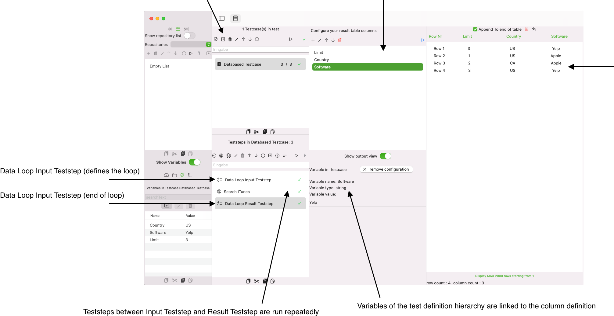
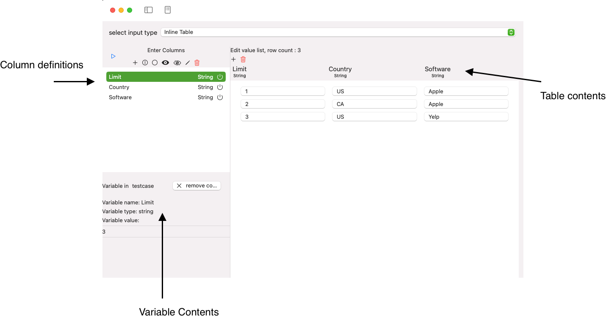
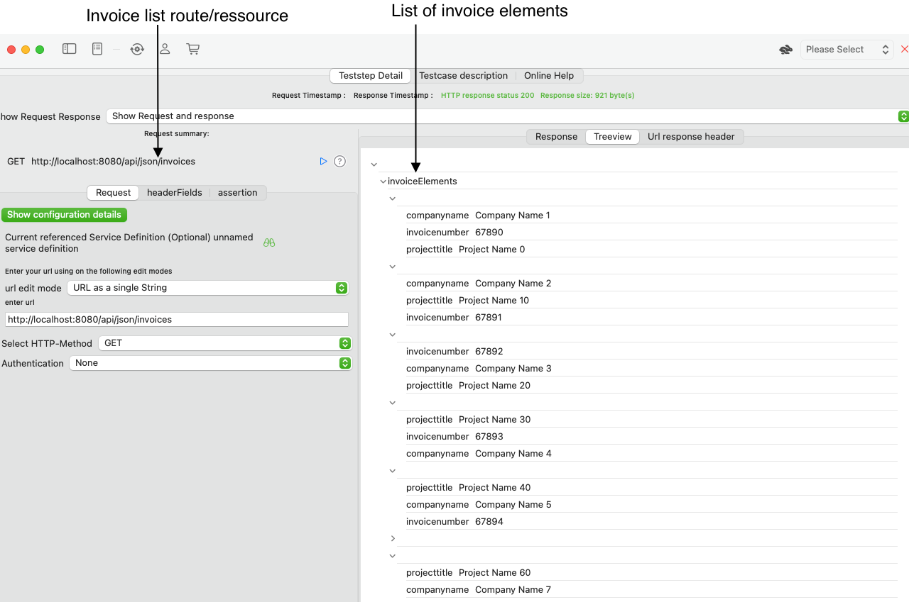
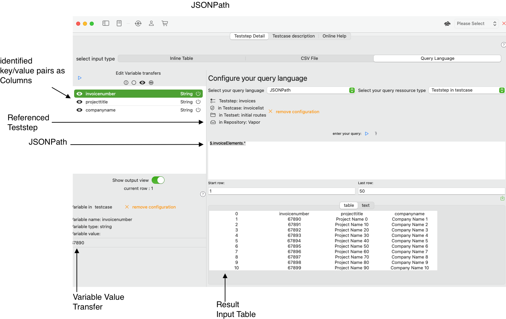
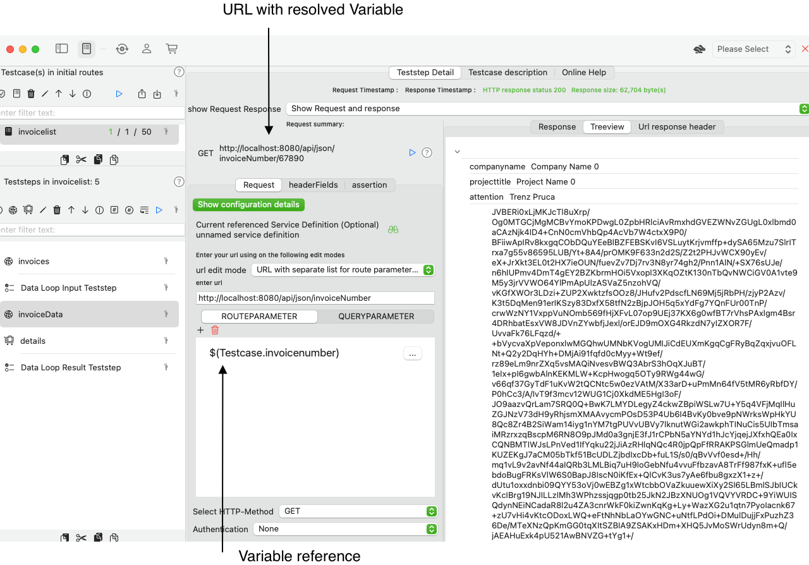
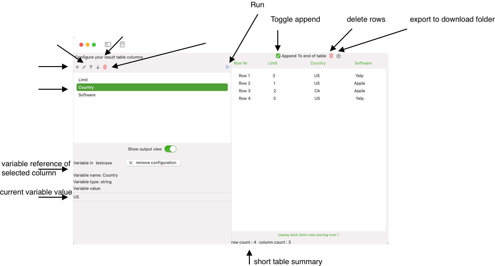

Databased Testcase
A databased testcase runs its teststeps repeatedly with varying predefined data in a table. The idea is to assess your service under test with different data and verify the results later in a table.
This kind of data-based tests can be achieved with the Testcase type Databased Testcase.
See the step-by-step tutorial Create a Databased Testcase for more information how to perform this task.
A Databased Testcase is a specific Testcase type that you create in the View Testcase List. It uses the following elements:
-A Data Loop Input Teststep that contains the data to iterate over
-
A list of Teststeps that perform the actual service tests with data from the Data Loop Input Teststep
-
A Data Loop Result Teststep that write variable values into a result table 
Data Loop Input Teststep
This teststep is meant to provide the date for the Data Loop. Depending on our edition (Community Edition or Standard Edition) you have two options to provide your tabular data:
-
A Manual Table Editor
-
A configurable CSV file input
-
A Query input, see Create a Query-based Valuelist Input
All of these options foresee a mapping between columns of your table and a variable in your Test hierarchy, as you can see in the following screenshot:

-
We define a number of columns for our table
-
We link these columns to variables in our test hierarchy
-
We enter the data (in a manual table) or import the data (and import the column information) from a CSV file
-
When we run this Teststep, the current row data will be read and the information in the row cells will be used to update the referenced variable value
-
Any subsequent Teststep will be able to access the current variable value with the $(Holder.Name) notation
Create a Query-based valuelist Input
A query-based valuelist input allows you to use a query language like XQuery, XPath or JSONPath to provide variables values from an HTTP/SOAP Teststep response and loop over each element in your Databased Testcase.
A query-based valuelist input provides a powerful option to read a list of elements from an HTTP/SOAP Teststep reponse and delivers the top level child elments as columns in table. This is the input for our Databased Testcase Run Loop.
The following image shows a sample JSON- response with a number of invoice elements that hold sub elements. We want to iterate over these invoice elements and use the sub elements as columns in an input table, as you would do use a CSV file or a manual table.
Use case of a query-based valuelist input
We will illustrate this with the following use case, as some transformations would apply when querying JSON-Elements or XML-Elements and provide them as flat table with columns and rows. Let's test a REST-service that exposes two routes:
-
A route/ressource hosturl/api/json/invoices that returns a list of available invoices with some metadata such as invoice number and company
-
A route/ressource hosturl/api/json/invoiceNumber/invoicenumber that returns the invoie document with detailed invoice data such as amount and term
We want to verify that each invoice returned from the first route can be received in the second route and want to make sure that the information on the invoice-element corresponds to the metadata returned in the JSON-element.

Each element is a JSON-Dictionary that holds three key/value-pairs, the webservice call would return 10 invoice elements:
-
companyname
-
invoicenumber
-
projecttitle
We will apply the following JSONPath to extract the information for each Dictionary in the list and create an Input table for our Databased-Testcase:
JSONPath: $.invoiceElements.*

Here we go. We have the input for the Databased Testcase Run Loop. Each column entry is automatically assigned to a Variable that has been created for you. You may use this in call of the second webservice in such a way: 
Databased Testcase Run Details
A Databased Testcase run performs the following logic:
-
All Teststeps before the the Data Loop Input Teststep will run once
-
All Teststeps between the Data Loop Input Teststep and the Data Loop Result Teststep will run for each row in the Data Loop Input Teststep
-
Each Teststep defines which of the variables it uses, you may use them in the URL as parameter values or in a JSON or SOAP body
-
The Data Loop Result Teststep is the last Teststep that is run repeatedlly
-
All Teststeps after the Data Loop Result Teststep will run once
Data Loop Result Teststep
This Teststep gives you the option to write any Variable values in the Test definition hierarchy to a result table. This result table is stored internally and can be exported to a CSV-file. You can append new results to the end of the table with new test runs or simply override any existing entry with the option Append to end of file.

See the step-by-step tutorial Create a Databased Testcase for more information how to perform this task.